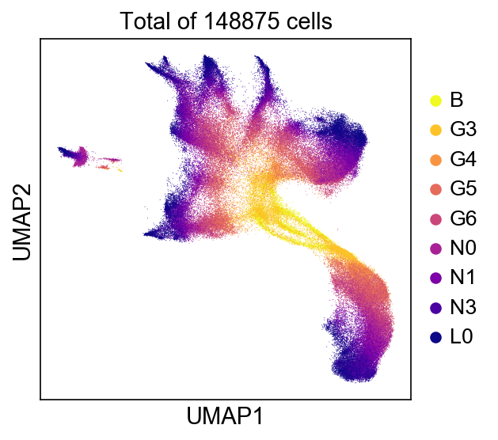
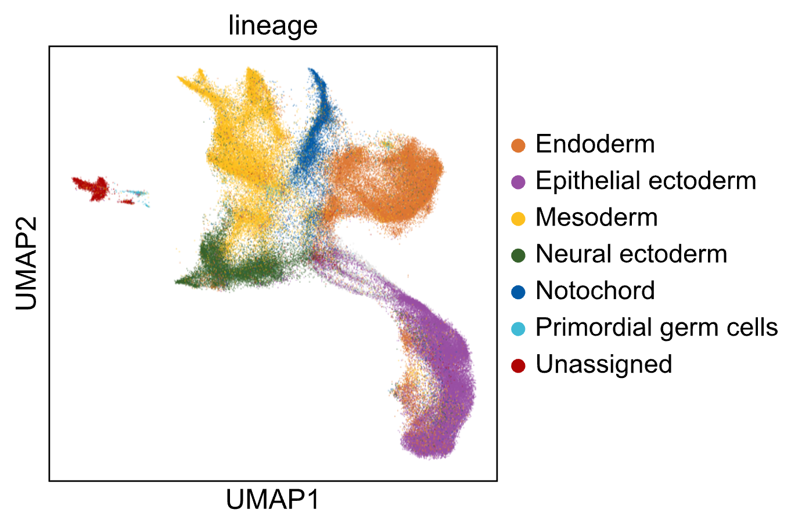

stagewiseNN - Building developmental tree from scRNA-seq¶
stagewiseNN is a computational tool for constructing developmental (lineage) tree from Multi-staged single-cell RNA-seq data.
It starts from building a single-cell graph by connecting each cell to its k-nearest neighbors in the parent stage, followed by voting-based tree-construction and adaptive cluster refinement.

The single-cell graph can be further visualized using graph embedding methods, e.g. UMAP, SPRING.
We have used it to build the developmental tree from Amphioxus embryonic cells, across nine developmental stages (“B”, “G3”, “G4”, “G5”, “G6”, “N0”, “N1”, “N3”, “L0”). And seven major lineages were recognized.
 {kind=link}
{kind=link}
Installation¶
Requirements:
python >= 3.6
scanpy: https://scanpy.readthedocs.io/en/stable/installation.html
scikit-learn: https://pypi.org/project/scikit-learn/
Install from source code:
git clone https://github.com/zhanglabtools/stagewiseNN.git
cd stagewiseNN
python setup.py install
Usage¶
See Tutorial for using stagewiseNN for detailed guide.
import swnn
# ====== Inputs ======
# data_matrix = ..
# stage_labels = ..
# group_labels = ..
# stage_order = [f'stage_{i}' for i in range(5)]
builder = swnn.Builder(stage_order=stage_order)
# step1:
# building (stage-wise) single-cell graph
distmat, connect = builder.build_graph(
X=data_matrix, stage_lbs=stage_labels,
)
# step2:
# build developmental tree from single-cell graph
edgedf, refined_group_lbs = builder.build_tree(group_labels, stage_labels,)
Contribute¶
Issue Tracker: https://github.com/XingyanLiu/stagewiseNN/issues
Source Code:
https://github.com/XingyanLiu/stagewiseNN (the developmental version)